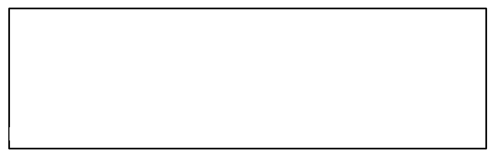

6 Thoughts, Feelings, Behaviours and Body Sensations
Recap
- Fight, flight or freeze are ways in which humans respond to threats (or stressors).
- The traffic lights help you to know what thoughts, feelings, behaviours and body sensations you can experience in different zones - green zone (rest), amber zone (fight or flight) and red zone (freeze).
- When we feel threatened or stressed, we can go into the amber zone and can get stuck there.
- If we don’t have a way to get back down to the green zone, the brain takes us into the red zone. This is where functional neurological symptoms can happen.
What keeps you feeling stuck?
We discussed in module 5 how thoughts, feelings, behaviours and body sensations happen in each zone, even if you don’t notice them. This picture shows how your thoughts, feelings, behaviours and body sensations relate to each other. Some people might be more aware of their thoughts, feelings, behaviours and body sensations, whilst other people might not be aware at all.
The type of threat we experience influences what we think in a situation, which in turn affects the way we feel (emotionally and physically) and our behaviour. Although this is drawn out as a flow diagram, where one thing leads to another, in reality we experience all parts of this cycle at the same time.
Different types of thoughts, feelings, behaviours and body sensations happen in each zone (green, amber and red).
If you feel stuck, it could be because you are trapped in the amber or red zones more often that you want to be. That’s why the first step of recovery from FND is to develop your awareness of these cycles.
Green
For example, if you are in the green zone, you might experience the following thoughts, feelings, behaviours, and body sensations:
Amber
For example, if you are in the amber zone, you might experience the following thoughts, feelings, behaviours, and body sensations:
Red
For example, if you are in the red zone, you might experience the following thoughts, feelings, behaviours, and body sensations:
When you are triggered to enter the red (freeze) zone, it is because your brain is trying to keep you away from threats. It will make you zone out so that you are not present. It might make you sleep, shake or collapse and this is where you will have functional neurological symptoms.
How aware are you of your thoughts, feelings, behaviours and body sensations when you are in these different zones?

In module 4, you have listed your ‘sabretooth tigers’ (threats that trigger your fight or flight, or freeze response). Choose one of these threats and have a go at drawing out your thoughts, feelings, behaviours, and body sensations in the diagram below, like the picture above.

It’s not always easy to spot your thoughts, feelings, behaviours and body sensations, especially if you’re not used to noticing these kinds of things. You may have got into the habit of ignoring them, particularly if they’re unpleasant. You may even think you never feel like you’re in the amber zone or red zone, because it’s become so familiar.
Becoming aware of thoughts, feelings, behaviours and body sensations can take practice but will get easier the more you do it.
You can also practice with a family member or friend. Ask them to give you an example of a difficult situation that they’ve been in and try and identify their thoughts, feelings, behaviours and body sensations.
Knowledge Check
- Thoughts, feelings, behaviours and body sensations all happen together and can be helpful or unhelpful. TRUE or FALSE?
- A threat makes you stay in the green zone. TRUE or FALSE?
- Everyone is aware of their thoughts, feelings, behaviours and body sensations. TRUE or FALSE?
Thoughts, feelings, behaviours and body sensations all happen together and can be helpful or unhelpful. TRUE or FALSE?
TRUE, in any situation (or traffic light zone), you will have thoughts, feelings, behaviours and body sensations, even if you are not aware of them. It is important to recognise the types of thoughts, feelings, behaviours, and body sensations that you have in different zones so you can develop your awareness of them.
A threat makes you stay in the green zone. TRUE or FALSE?
FALSE, a threat triggers your fight, flight or freeze response, taking you into the amber or red zone.
Everyone is aware of their thoughts, feelings, behaviours and body sensations. TRUE or FALSE?
FALSE, some people might be aware of their thoughts, feelings, behaviours and body sensations, whilst others might only be aware sometimes, and other people might not be aware at all. Everyone is different. It isn’t right or wrong to be aware or not, but it can be helpful to learn how to be aware so you can spot what is causing your functional neurological symptoms.